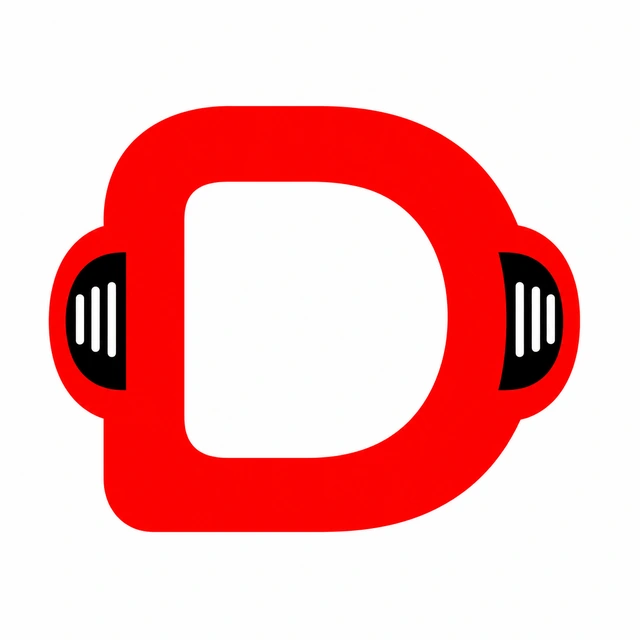
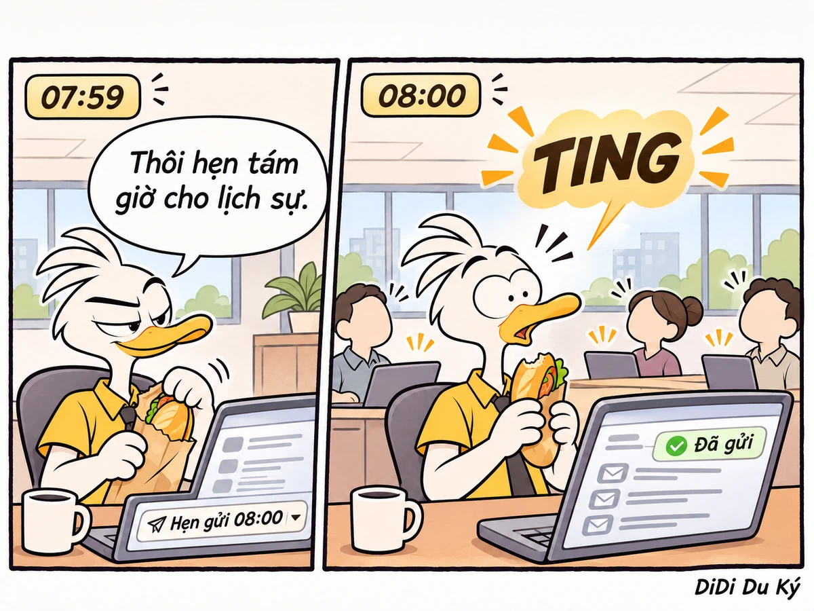

DiDi Du Ký
Mình xây nhận diện kênh và phát triển những câu chuyện đời thường quanh DiDi, mascot của Di Động Việt.

Nhận diện kênh


Hướng phát triển
- Facebook Page
- Mình sẽ kể chuyện công sở bằng tranh ngắn nhiều khung.
- TikTok
- Mình sẽ chuyển những tình huống đời thường thành video ngắn.
